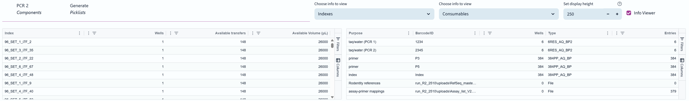
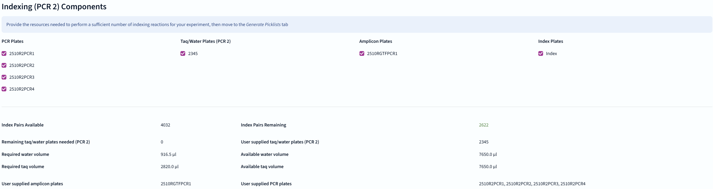
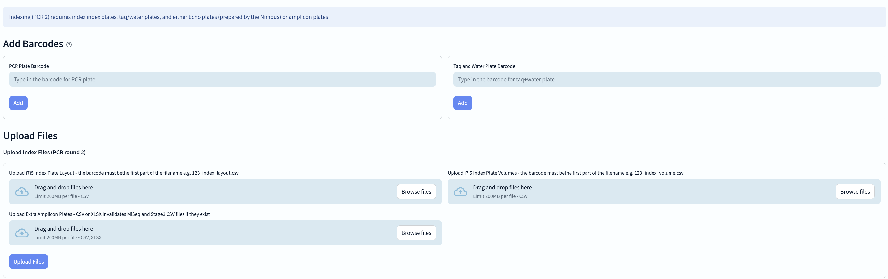
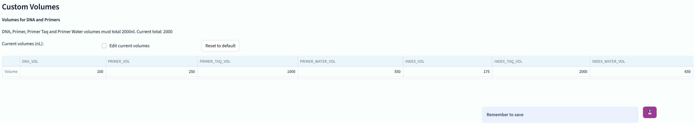
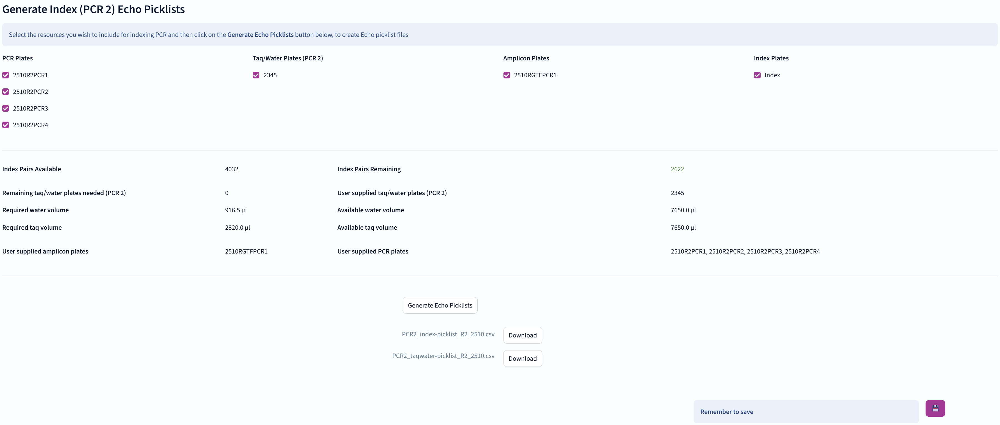

The fourth stage of the NGS genotyping pipeline involves performing a second round of PCR to add unique index barcodes to the DNA fragments.
As with the Primer stage, there are two tabs for PCR Components and Generating Picklists.


You can see all of the component plates available for indexing here.

You can add plates specific to the index PCR stage here, namely dedicated taq/water plates for PCR2, index layout and volume, or extra amplicon plates.
There is no need to add additional PCR plates here, it's simply that the widget offers both the PCR and Taq/water barcode types.

Lastly, you can set custom transfer volumes for the index (PCR2) reaction. Do not do this unless specifically instructed!

Just like the Primer stage, this tab allows you to generate picklists for the index PCR reactions.
There are checkboxes to select the various available components for this pipeline stage.
There is no "force" option for generating files at this stage as the index barcodes are all required to be present at full volumes.
If the Echo PCR2 picklists already exist, you can choose to overwrite them or keep the existing ones.
...and don't forget to save your progress!